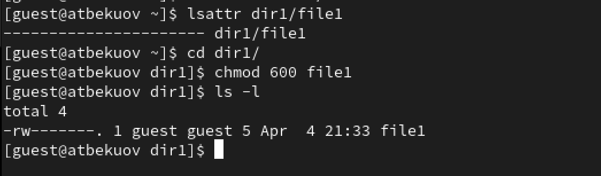
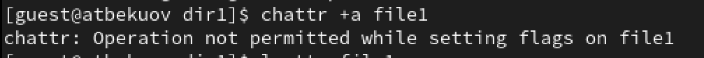
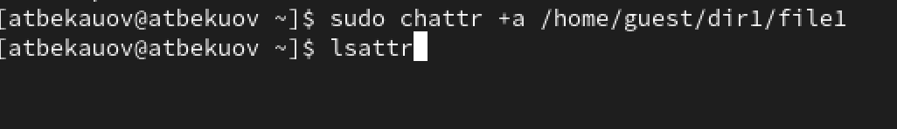
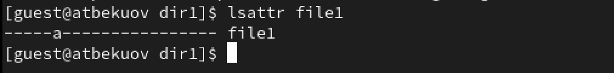
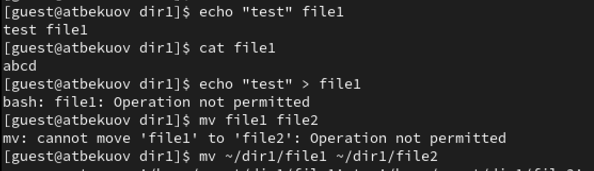
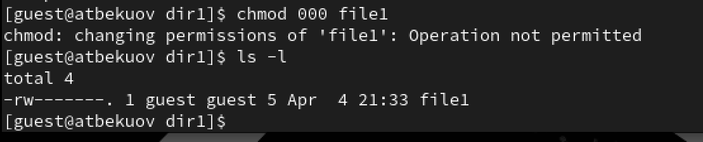
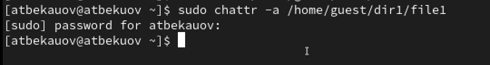
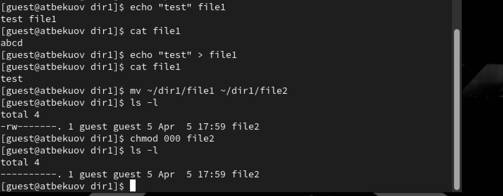
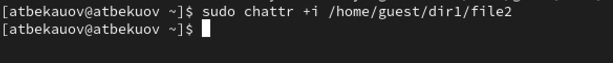
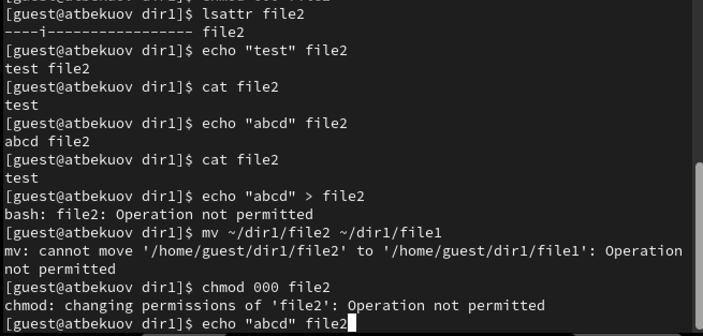

Основы информационной безопасности - Бекауов А.Т
Российский университет дружбы народов, Москва, Россия
Цель данной лабораторной работы - получение практических навыков работы в консоли с расширенными атрибутами файлов.
От имени пользователя guest определим расширенные атрибуты файла dir1/file1. Затем командой chmod на файл file 1 устанавливаю права разрешающие чтение и запись для владельца файла.

Далее попытаюсь изменить расширенные атрибуты file1 от имени пользователя guest. Попытка неудачная - отказано в доступе

После этого захожу на вторую консоль под именем администратора, и добавляю к file1 аттрибут a

От пользователя guest проверяю правильность установления атрибутов

Далее проверяю возможеость выполнения следующих действий: дозапись в файл (выполнено), чтение файла (выполнено), стирание информации (отказано в доступе), переименование файла (отказано в доступе).

Попробую установить на файл file1 права 000 с атрибутом a. Отказано в доступе

Снимем атрибут а с файла file1 от имени администратора.

Проверяем все те же действия без атрибута а: дозапись в файл (выполнено), чтение файла (выполнено), стирание информации (выполнено), переименование файла (выполнено), изменение прав на файл (выполнено).

Далее от имени пользователя с правами администратора добавил атрибут i на файл file1

Далее проверяю выполнение указанных выше операций с атрибутом i: дозапись в файл (провалено), чтение файла (выполнено), стирание информации (отказано), переименование файла (отказано), изменение прав на файл (отказано).

В ходе данной лаботраторной работы я получил практические навыки работы в консоли с расширенными атрибутами файлов.